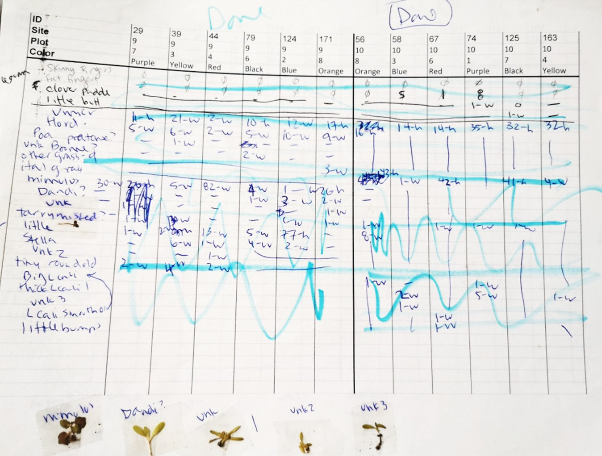
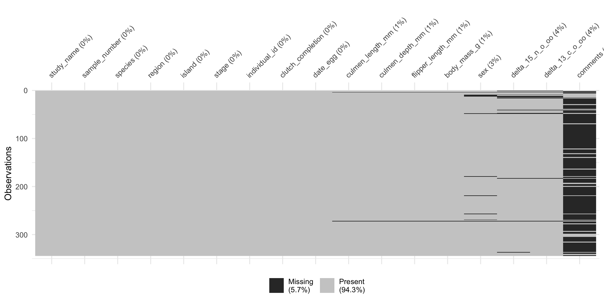
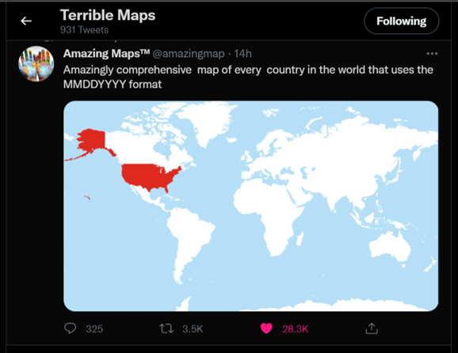
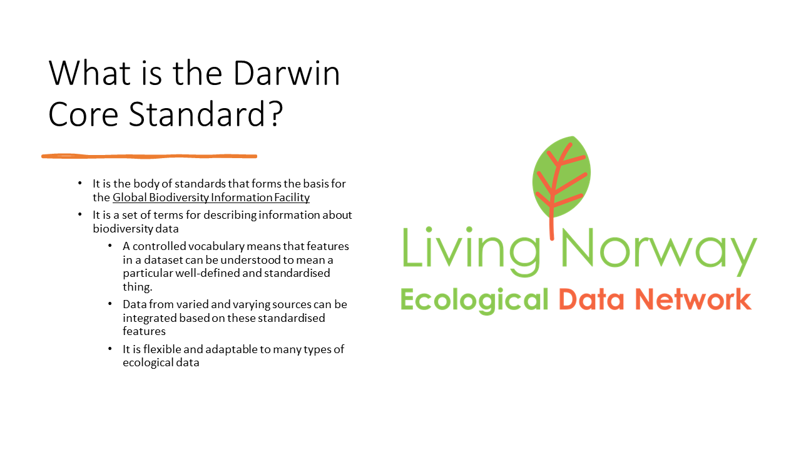
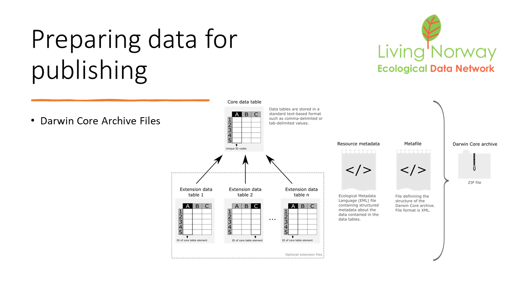
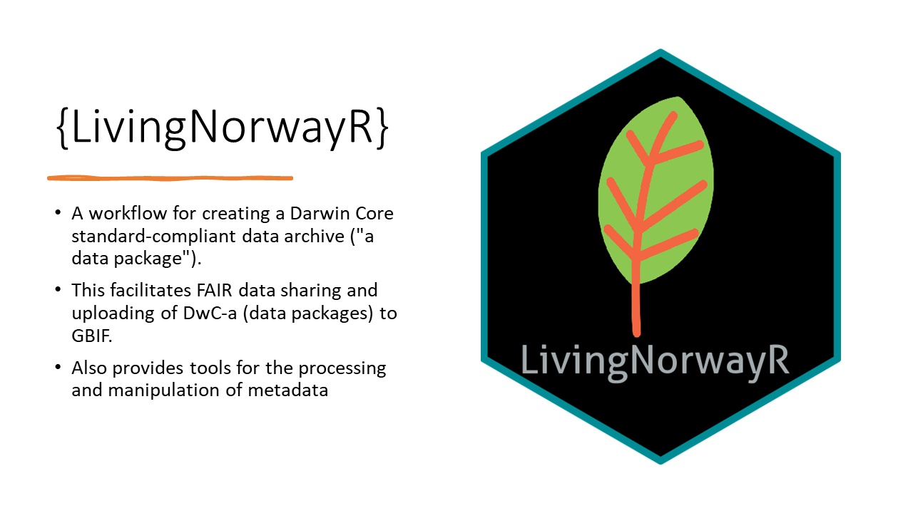
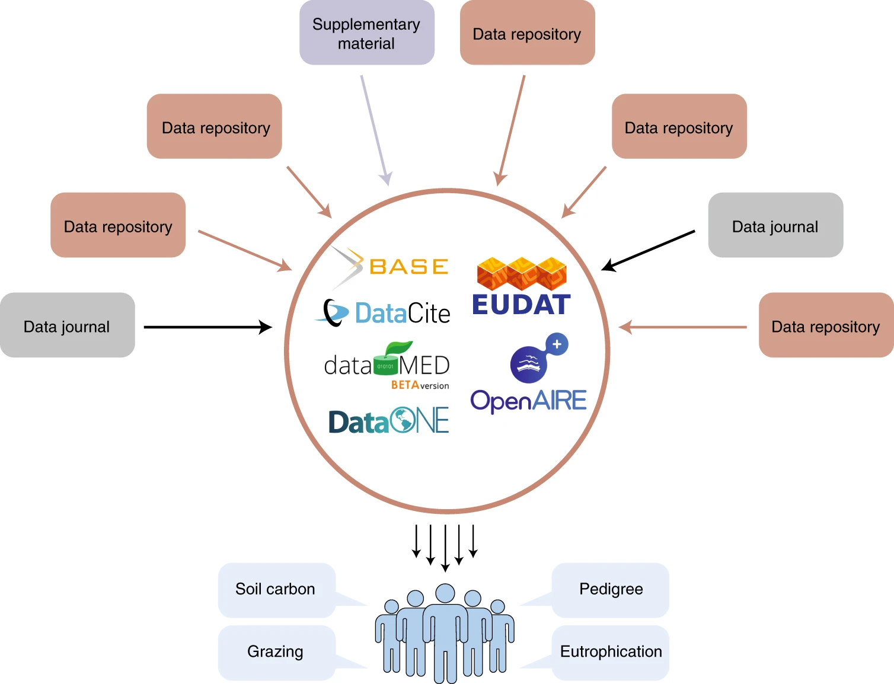
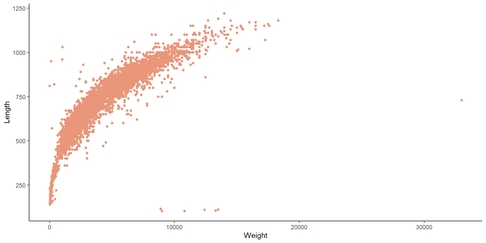

[1] "studyName" "Sample Number" "Species"
[4] "Region" "Island" "Stage"
[7] "Individual ID" "Clutch Completion" "Date Egg"
[10] "Culmen Length (mm)" "Culmen Depth (mm)" "Flipper Length (mm)"
[13] "Body Mass (g)" "Sex" "Delta 15 N (o/oo)"
[16] "Delta 13 C (o/oo)" "Comments" Data curation, coding style and sharing data
- https://github.com/DrMattG/Oikos_Norway_2023
- …/blob/main/messy_data.rds
- …/blob/main/notReproducible.qmd

The Data life-cycle

Data handling & curation
Managing the “data life-cycle” within and beyond a project.
- creating data
- organising data
- maintaining data
Data cleaning vs Data wrangling
Data cleaning is the process of removing incorrect, duplicate, or otherwise erroneous data from a dataset
Data wrangling changing the format to make it more useful for your analysis
Some R Functions that help data cleaning
{janitor}
[1] "study_name" "sample_number" "species"
[4] "region" "island" "stage"
[7] "individual_id" "clutch_completion" "date_egg"
[10] "culmen_length_mm" "culmen_depth_mm" "flipper_length_mm"
[13] "body_mass_g" "sex" "delta_15_n_o_oo"
[16] "delta_13_c_o_oo" "comments" {dplyr}
Rows: 344
Columns: 17
$ study_name <chr> "PAL0708", "PAL0708", "PAL0708", "PAL0708", "PAL0708~
$ sample_number <dbl> 1, 2, 3, 4, 5, 6, 7, 8, 9, 10, 11, 12, 13, 14, 15, 1~
$ species <chr> "Adelie Penguin (Pygoscelis adeliae)", "Adelie Pengu~
$ region <chr> "Anvers", "Anvers", "Anvers", "Anvers", "Anvers", "A~
$ island <chr> "Torgersen", "Torgersen", "Torgersen", "Torgersen", ~
$ stage <chr> "Adult, 1 Egg Stage", "Adult, 1 Egg Stage", "Adult, ~
$ individual_id <chr> "N1A1", "N1A2", "N2A1", "N2A2", "N3A1", "N3A2", "N4A~
$ clutch_completion <chr> "Yes", "Yes", "Yes", "Yes", "Yes", "Yes", "No", "No"~
$ date_egg <date> 2007-11-11, 2007-11-11, 2007-11-16, 2007-11-16, 200~
$ culmen_length_mm <dbl> 39.1, 39.5, 40.3, NA, 36.7, 39.3, 38.9, 39.2, 34.1, ~
$ culmen_depth_mm <dbl> 18.7, 17.4, 18.0, NA, 19.3, 20.6, 17.8, 19.6, 18.1, ~
$ flipper_length_mm <dbl> 181, 186, 195, NA, 193, 190, 181, 195, 193, 190, 186~
$ body_mass_g <dbl> 3750, 3800, 3250, NA, 3450, 3650, 3625, 4675, 3475, ~
$ sex <chr> "MALE", "FEMALE", "FEMALE", NA, "FEMALE", "MALE", "F~
$ delta_15_n_o_oo <dbl> NA, 8.94956, 8.36821, NA, 8.76651, 8.66496, 9.18718,~
$ delta_13_c_o_oo <dbl> NA, -24.69454, -25.33302, NA, -25.32426, -25.29805, ~
$ comments <chr> "Not enough blood for isotopes.", NA, NA, "Adult not~{skimr}
| Name | palmerpenguins::penguins_… |
| Number of rows | 344 |
| Number of columns | 17 |
| _______________________ | |
| Column type frequency: | |
| character | 9 |
| Date | 1 |
| numeric | 7 |
| ________________________ | |
| Group variables | None |
Variable type: character
| skim_variable | n_missing | complete_rate | min | max | empty | n_unique | whitespace |
|---|---|---|---|---|---|---|---|
| studyName | 0 | 1.00 | 7 | 7 | 0 | 3 | 0 |
| Species | 0 | 1.00 | 33 | 41 | 0 | 3 | 0 |
| Region | 0 | 1.00 | 6 | 6 | 0 | 1 | 0 |
| Island | 0 | 1.00 | 5 | 9 | 0 | 3 | 0 |
| Stage | 0 | 1.00 | 18 | 18 | 0 | 1 | 0 |
| Individual ID | 0 | 1.00 | 4 | 6 | 0 | 190 | 0 |
| Clutch Completion | 0 | 1.00 | 2 | 3 | 0 | 2 | 0 |
| Sex | 11 | 0.97 | 4 | 6 | 0 | 2 | 0 |
| Comments | 290 | 0.16 | 18 | 68 | 0 | 10 | 0 |
Variable type: Date
| skim_variable | n_missing | complete_rate | min | max | median | n_unique |
|---|---|---|---|---|---|---|
| Date Egg | 0 | 1 | 2007-11-09 | 2009-12-01 | 2008-11-09 | 50 |
Variable type: numeric
| skim_variable | n_missing | complete_rate | mean | sd | p0 | p25 | p50 | p75 | p100 | hist |
|---|---|---|---|---|---|---|---|---|---|---|
| Sample Number | 0 | 1.00 | 63.15 | 40.43 | 1.00 | 29.00 | 58.00 | 95.25 | 152.00 | ▇▇▆▅▃ |
| Culmen Length (mm) | 2 | 0.99 | 43.92 | 5.46 | 32.10 | 39.23 | 44.45 | 48.50 | 59.60 | ▃▇▇▆▁ |
| Culmen Depth (mm) | 2 | 0.99 | 17.15 | 1.97 | 13.10 | 15.60 | 17.30 | 18.70 | 21.50 | ▅▅▇▇▂ |
| Flipper Length (mm) | 2 | 0.99 | 200.92 | 14.06 | 172.00 | 190.00 | 197.00 | 213.00 | 231.00 | ▂▇▃▅▂ |
| Body Mass (g) | 2 | 0.99 | 4201.75 | 801.95 | 2700.00 | 3550.00 | 4050.00 | 4750.00 | 6300.00 | ▃▇▆▃▂ |
| Delta 15 N (o/oo) | 14 | 0.96 | 8.73 | 0.55 | 7.63 | 8.30 | 8.65 | 9.17 | 10.03 | ▃▇▆▅▂ |
| Delta 13 C (o/oo) | 13 | 0.96 | -25.69 | 0.79 | -27.02 | -26.32 | -25.83 | -25.06 | -23.79 | ▆▇▅▅▂ |
{dplyr}
{naniar}
Data validation
library(data.validator)
report <- data_validation_report()
between <- function(a, b) {
function(x) { a <= x && x <= b }
}
validate(iris, name = "Verifying flower dataset") |>
validate_if(Sepal.Length > 0,
description = "Sepal length is greater than 0") |>
validate_cols(between(0, 4),
Sepal.Width,
description = "Sepal width is between 0 and 4") |>
add_results(report)
#save_report(report)
#browseURL("validation_report.html")Validation summary:
Number of successful validations: 2
Number of failed validations: 0
Number of validations with warnings: 0
Advanced view:
|table_name |description |type | total_violations|
|:------------------------|:------------------------------|:-------|----------------:|
|Verifying flower dataset |Sepal length is greater than 0 |success | NA|
|Verifying flower dataset |Sepal width is between 0 and 4 |success | NA|Data wrangling

Transform to long format
library(tidyverse)
# this avoids tidyverse conflicts with the base function filter
conflicted::conflict_prefer("filter", "dplyr")
# Pivot longer
penguins_long<-penguins |>
pivot_longer(contains("_"),
names_to = c("part", "measure" , "unit"),
names_sep = "_")
penguins_long# A tibble: 1,376 x 8
species island sex year part measure unit value
<fct> <fct> <fct> <int> <chr> <chr> <chr> <dbl>
1 Adelie Torgersen male 2007 bill length mm 39.1
2 Adelie Torgersen male 2007 bill depth mm 18.7
3 Adelie Torgersen male 2007 flipper length mm 181
4 Adelie Torgersen male 2007 body mass g 3750
5 Adelie Torgersen female 2007 bill length mm 39.5
6 Adelie Torgersen female 2007 bill depth mm 17.4
7 Adelie Torgersen female 2007 flipper length mm 186
8 Adelie Torgersen female 2007 body mass g 3800
9 Adelie Torgersen female 2007 bill length mm 40.3
10 Adelie Torgersen female 2007 bill depth mm 18
# ... with 1,366 more rowsTransform to wide format
# A tibble: 92 x 9
island sex year part measure unit Adelie Gentoo Chinstrap
<fct> <fct> <int> <chr> <chr> <chr> <list> <list> <list>
1 Torgersen male 2007 bill length mm <dbl [7]> <NULL> <NULL>
2 Torgersen male 2007 bill depth mm <dbl [7]> <NULL> <NULL>
3 Torgersen male 2007 flipper length mm <dbl [7]> <NULL> <NULL>
4 Torgersen male 2007 body mass g <dbl [7]> <NULL> <NULL>
5 Torgersen female 2007 bill length mm <dbl [8]> <NULL> <NULL>
6 Torgersen female 2007 bill depth mm <dbl [8]> <NULL> <NULL>
7 Torgersen female 2007 flipper length mm <dbl [8]> <NULL> <NULL>
8 Torgersen female 2007 body mass g <dbl [8]> <NULL> <NULL>
9 Torgersen <NA> 2007 bill length mm <dbl [5]> <NULL> <NULL>
10 Torgersen <NA> 2007 bill depth mm <dbl [5]> <NULL> <NULL>
# ... with 82 more rowsWhat’s going on?
No identifier for each observation so R puts all the values in a list. To solve this we need a unique row id.
penguins_long |>
mutate(sample=row_number()) |>
pivot_wider(names_from = species,
values_from = value)# A tibble: 1,376 x 10
island sex year part measure unit sample Adelie Gentoo Chinstrap
<fct> <fct> <int> <chr> <chr> <chr> <int> <dbl> <dbl> <dbl>
1 Torgersen male 2007 bill length mm 1 39.1 NA NA
2 Torgersen male 2007 bill depth mm 2 18.7 NA NA
3 Torgersen male 2007 flipper length mm 3 181 NA NA
4 Torgersen male 2007 body mass g 4 3750 NA NA
5 Torgersen female 2007 bill length mm 5 39.5 NA NA
6 Torgersen female 2007 bill depth mm 6 17.4 NA NA
7 Torgersen female 2007 flipper length mm 7 186 NA NA
8 Torgersen female 2007 body mass g 8 3800 NA NA
9 Torgersen female 2007 bill length mm 9 40.3 NA NA
10 Torgersen female 2007 bill depth mm 10 18 NA NA
# ... with 1,366 more rowsTidy data

Tidy data principles

Messy data
Look at the messy data dataset. How would you go about cleaning this dataset?
messy_data <- readRDS("C:/Users/matthew.grainger/Documents/Projects_in_development/Oikos_Norway_2023/messy_data.rds")
messy_data |> data.table::data.table() Date SEX age Species Name lat lon count
1: 2023/02/01 male Adult Lagopus matu 9.123826 62.92628 5
2: 02/02/23 Female Juvenile Logopus muta 7.836517 61.70676 9
3: 2023/02/01 male J Logopus muta 9.387262 63.84034 15
4: 01-01-2023 female ADULT Lagopus lagopus 9.609423 61.06334 14
5: 01-01-2023 Male ADULT Lagopus matu 8.531654 63.44823 10
6: 2023-02-01 Male A Lagopus muta 10.369053 62.60819 10
7: 02/02/23 FEMALE JUVENILE Lagopus muta 9.297162 62.71758 11
8: 02-01-23 FEMALE Adult Lagopus lagopus 6.479778 61.59151 15
9: 2023-02-01 female Juvenile Lagopus muta 7.879991 63.10879 4
10: 02/02/23 MALE JUVENILE Lagopus muta 6.794386 62.41039 14
11: 2023/02/01 Female ADULT Lagopus matu 10.075820 62.14845 6
12: 02-01-23 MALE J Lagopas lagopus 9.368355 64.29196 13
13: 2023/02/01 Female ADULT Lagopus matu 10.933222 63.08134 8
14: 01-01-2023 Male A Logopus muta 9.508031 61.63579 7
15: 02/02/23 MALE JUVENILE Logopus muta 10.925062 62.59583 4
16: 02/02/23 female A Lagopus lagopus 9.279532 62.91511 11
17: 02/02/23 male J Lagopus lagopus 9.139805 65.96236 10
18: 2023-02-01 male Juvenile Lagopas lagopus 10.119368 62.39573 15
19: 02-01-23 MALE Adult Lagopus matu 7.847859 64.10893 10
20: 2023-02-01 male JUVENILE Lagopus muta 10.732284 64.42712 13
21: 2023/02/01 Female A Lagopas lagopus 8.541997 62.14247 14
22: 02/02/23 male J Logopus muta 9.220419 62.62880 13
23: 02-01-23 female JUVENILE Lagopus lagopus 9.624997 63.91689 13
24: 01-01-2023 female Adult Lagopas lagopus 8.769459 62.61416 9
25: 01-01-2023 FEMALE ADULT Lagopus matu 9.011462 64.40237 2
26: 02-01-23 MALE ADULT Lagopas lagopus 8.343305 63.35766 19
27: 2023/02/01 Male JUVENILE Lagopus lagopus 7.015809 62.97256 10
28: 2023-02-01 MALE ADULT Lagopas lagopus 7.249466 63.64190 5
29: 02/02/23 FEMALE Adult Lagopas lagopus 9.762441 61.59733 6
30: 2023/02/01 Female Juvenile Lagopas lagopus 9.081167 62.09558 6
31: 2023/02/01 MALE JUVENILE Logopus muta 8.544149 64.01272 15
32: 2023/02/01 FEMALE JUVENILE Lagopas lagopus 9.115873 64.69849 9
33: 01-01-2023 male ADULT Lagopus matu 7.281479 63.76351 12
34: 2023/02/01 female JUVENILE Lagopus muta 10.688551 63.98931 15
35: 02-01-23 Male Juvenile Lagopus lagopus 9.927145 62.94457 7
36: 02-01-23 male Juvenile Logopus muta 8.498186 62.40878 9
37: 02-01-23 female Juvenile Lagopus matu 8.993657 64.06921 0
38: 2023-02-01 female ADULT Logopus muta 8.400518 63.67579 3
39: 2023/02/01 Male ADULT Lagopus matu 8.671143 63.79903 18
40: 01-01-2023 female J Lagopus matu 9.794615 61.83442 5
41: 2023/02/01 MALE A Logopus muta 7.662123 63.20559 18
42: 01-01-2023 male A Logopus muta 7.971045 64.32591 15
43: 01-01-2023 female J Lagopus matu 8.777006 62.43949 11
44: 02/02/23 Male Juvenile Lagopus muta 8.228000 62.71882 16
45: 01-01-2023 Female J Lagopus muta 8.912136 61.42190 5
46: 01-01-2023 MALE Juvenile Lagopus muta 10.286843 62.89537 7
47: 2023/02/01 male Adult Logopus muta 9.195381 61.35946 6
48: 02-01-23 Female J Lagopus matu 8.801430 62.92860 2
49: 02/02/23 female J Lagopas lagopus 11.148595 63.51963 10
50: 02/02/23 female ADULT Lagopas lagopus 7.861651 62.37019 12
51: 2023-02-01 female A Lagopus muta 9.238828 62.88834 5
52: 2023/02/01 female JUVENILE Logopus muta 9.126381 63.92296 13
53: 02-01-23 female Juvenile Lagopas lagopus 10.303237 62.86576 5
54: 01-01-2023 female A Lagopas lagopus 8.745229 62.17313 18
55: 02-01-23 female A Logopus muta 8.691021 62.10421 6
56: 02/02/23 female JUVENILE Lagopas lagopus 9.314176 62.15080 15
57: 01-01-2023 Female Juvenile Logopus muta 7.122930 62.32509 11
58: 2023-02-01 Female A Lagopas lagopus 9.117661 61.81606 18
59: 01-01-2023 male A Lagopas lagopus 9.800076 63.52459 3
60: 2023/02/01 Female JUVENILE Lagopus matu 9.263243 63.46659 12
61: 02-01-23 Female Adult Lagopas lagopus 9.432039 61.53335 7
62: 2023-02-01 Male Adult Lagopus matu 7.910848 62.92433 1
63: 02/02/23 Male J Logopus muta 9.092678 61.07257 13
64: 2023/02/01 male A Lagopus lagopus 10.627507 62.46044 9
65: 2023/02/01 MALE A Lagopus matu 8.575023 62.45981 13
66: 01-01-2023 female JUVENILE Lagopas lagopus 10.736562 64.37288 5
67: 01-01-2023 MALE ADULT Lagopas lagopus 10.644320 64.10796 14
68: 02-01-23 MALE ADULT Lagopus lagopus 8.442710 65.27996 12
69: 02-01-23 FEMALE Juvenile Lagopas lagopus 7.970893 62.21394 6
70: 02/02/23 male Juvenile Lagopus muta 7.002591 62.35749 7
71: 01-01-2023 FEMALE ADULT Lagopus lagopus 9.516319 63.04347 6
72: 01-01-2023 Female A Lagopus muta 8.313179 64.23023 12
73: 2023-02-01 female A Lagopas lagopus 7.678440 63.40045 6
74: 02-01-23 male ADULT Lagopus matu 8.729332 60.78910 5
75: 01-01-2023 Female Adult Logopus muta 9.753151 63.08899 8
76: 02/02/23 FEMALE Adult Lagopus matu 7.873569 62.33233 8
77: 01-01-2023 male Juvenile Lagopas lagopus 8.963270 62.15332 9
78: 02/02/23 male ADULT Lagopus lagopus 8.428166 64.55505 4
79: 02/02/23 Female A Lagopas lagopus 9.471109 61.53559 11
80: 01-01-2023 MALE J Lagopus matu 9.236367 62.27483 12
81: 2023-02-01 female ADULT Lagopus muta 8.939548 63.26092 3
82: 02-01-23 female ADULT Logopus muta 9.227044 61.22400 5
83: 2023-02-01 female JUVENILE Lagopus muta 9.318695 62.20958 11
84: 02/02/23 female Juvenile Lagopus matu 8.708364 63.88290 7
85: 02/02/23 female JUVENILE Lagopas lagopus 8.872903 63.71204 8
86: 2023/02/01 female Adult Lagopus matu 7.703743 63.25247 1
87: 2023-02-01 Female A Lagopus matu 9.127351 62.30380 11
88: 2023-02-01 Female Adult Lagopus matu 9.523766 60.64250 8
89: 2023/02/01 female J Lagopas lagopus 9.181112 61.92349 12
90: 02/02/23 MALE Juvenile Lagopas lagopus 7.702984 61.91841 4
91: 02-01-23 female J Logopus muta 8.141424 63.80680 9
92: 02-01-23 male Juvenile Lagopus matu 11.014120 64.89251 18
93: 01-01-2023 MALE JUVENILE Lagopus muta 6.444234 64.92426 7
94: 01-01-2023 male J Logopus muta 8.507807 63.49817 5
95: 02-01-23 Female Juvenile Lagopus matu 9.379068 62.59566 8
96: 02-01-23 Male J Lagopus lagopus 8.190334 61.91115 13
97: 02-01-23 male A Lagopus matu 8.489750 63.48030 7
98: 02/02/23 FEMALE Adult Lagopus muta 10.193635 62.98715 15
99: 02/02/23 MALE J Logopus muta 8.798305 63.96787 5
100: 2023-02-01 MALE A Lagopus matu 7.846161 63.42758 14
Date SEX age Species Name lat lon countCode style
What are attributes of good code?
Have a look at the “notReproducible.qmd” file
Tidyverse style guide
Useful package for style
What I think…
It runs (on your computer)
It runs (on my computer - without me having to do anything/much)
It does what you expect it to do (even after 5 years)
It is documented in some way
What Jenny Bryan thinks
If the first line of your R script is
setwd(“C:”)
I will come into your office and SET YOUR COMPUTER ON FIRE 🔥.
If the first line of your R script is
rm(list = ls())
I will come into your office and SET YOUR COMPUTER ON FIRE 🔥.
Sharing data
One of the biggest barriers to sharing data is a lack of standardisation and metadata
Standards
- Standards provide the “rules” and “protocols” to share information
- Standards enable interoperability of your data
- Even if not sharing data openly (immediately) this is useful for working with collaborators
- Sharing data depends on the consistent use of agreed standards.

Darwin Core
DWC-a
LivingNorwayR
Using open data
Culina, et al. Navigating the unfolding open data landscape in ecology and evolution. Nat Ecol Evol 2, 420–426 (2018). https://doi.org/10.1038/s41559-017-0458-2
Getting data through R (one way)
library(tidyverse)
library(RJSONIO)
library(EML)
## Using open ecology data
## Using packages other than the LivingNorwayR package
datasetKey <- "84b9a51f-ec2e-41dc-9d7a-1e3aa411b939"
dataset <- RJSONIO::fromJSON(paste0("http://api.gbif.org/v1/dataset/",
datasetKey,"/endpoint"))
endpoint_url <- dataset[[1]]$url
datasetName=sub(".*r=", "", endpoint_url)
datsetName=sub("&v*.","", datasetName)
tempDirLoc <- tempdir()
localDataLoc <- file.path(tempDirLoc,datasetName)
download.file(endpoint_url, localDataLoc, mode = "wb") Name Length Date
1 occurrence.txt 25905555 2023-02-21 09:21:00
2 eml.xml 5080 2023-02-21 09:21:00
3 measurementorfact.txt 1487374 2023-02-21 09:21:00
4 meta.xml 3065 2023-02-21 09:21:00occurence <- as_tibble(read.table(unz(localDataLoc, "occurrence.txt"),
header=T,sep="\t", quote=""))
measure <- as_tibble(read.table(unz(localDataLoc, "measurementorfact.txt"),
header=T,sep="\t", quote=""))
## You need to unzip the eml before read_eml() will work
f <- unzip(localDataLoc, "eml.xml")
eml=EML::read_eml(f)# A tibble: 34,112 x 32
id modif~1 insti~2 colle~3 basis~4 dynam~5 occur~6 catal~7 occur~8 sex
<int> <chr> <chr> <chr> <chr> <chr> <int> <int> <chr> <int>
1 5215659 2022-0~ NINA Fiskme~ HumanO~ "\"{\"~ 5215659 5215659 "" NA
2 5294435 2022-0~ NINA Fiskme~ HumanO~ "\"{\"~ 5294435 5294435 "" NA
3 5294765 2022-0~ NINA Fiskme~ HumanO~ "\"{\"~ 5294765 5294765 "" NA
4 5814209 2020-1~ NINA Fiskme~ HumanO~ "\"{\"~ 5814209 5814209 "" 2
5 5814125 2020-0~ NINA Fiskme~ Preser~ "\"{\"~ 5814125 5814125 "Ikke ~ 1
6 5814152 2020-0~ NINA Fiskme~ Preser~ "\"{\"~ 5814152 5814152 "Fiske~ 2
7 5815714 2020-1~ NINA Fiskme~ HumanO~ "\"{\"~ 5815714 5815714 "Fange~ NA
8 5294610 2022-0~ NINA Fiskme~ HumanO~ "\"{\"~ 5294610 5294610 "" NA
9 5814196 2020-0~ NINA Fiskme~ Preser~ "\"{\"~ 5814196 5814196 "Ã…pne~ 2
10 5823633 2022-0~ NINA Fiskme~ HumanO~ "\"{\"~ 5823633 5823633 "Gjenf~ 2
# ... with 34,102 more rows, 22 more variables: lifeStage <chr>,
# associatedReferences <chr>, samplingProtocol <chr>, year <int>,
# month <int>, day <int>, country <chr>, stateProvince <chr>, county <chr>,
# locality <chr>, decimalLatitude <dbl>, decimalLongitude <dbl>,
# coordinatePrecision <int>, scientificName <chr>, kingdom <chr>,
# phylum <chr>, class <chr>, order <chr>, family <chr>, genus <chr>,
# specificEpithet <chr>, vernacularName <chr>, and abbreviated variable ...# A tibble: 68,224 x 4
id measurementType measurementValue measurementUnit
<int> <chr> <chr> <chr>
1 5215659 Weight gram "4500"
2 5294610 Weight gram "4500"
3 5294435 Weight gram "4800"
4 5294765 Weight gram "3500"
5 5814209 Weight gram "11200"
6 5814125 Weight gram "3600"
7 5814152 Weight gram "3900"
8 5815714 Weight gram ""
9 5814196 Weight gram "2500"
10 5823633 Weight gram "10900"
# ... with 68,214 more rows[1] "Finstad, B. (2015): Fish tag database. v1. Norwegian Institute for Nature Research. Dataset/Occurrence. https://ipt.nina.no/ipt/resource?r=fiskmerk&v=1.0"$lang
[1] "eng"
$title
[1] "National fish tag database"$para
[1] "National database of tagged salmonids (Atlantic salmon, brown trout and Arctic char). Carlin tags (smolt) and Lea tags (adult fish) from various tagging projects in Norway. Recapture of released fish."# join measure to occurrence
joined_dat<-occurence |>
left_join(measure)
joined_dat |>
data.table::data.table() id modified institutionCode collectionCode
1: 5215659 2022-02-02 13:07:58.973 NINA Fiskmerk
2: 5215659 2022-02-02 13:07:58.973 NINA Fiskmerk
3: 5294435 2022-02-02 13:07:58.973 NINA Fiskmerk
4: 5294435 2022-02-02 13:07:58.973 NINA Fiskmerk
5: 5294765 2022-02-02 13:07:58.973 NINA Fiskmerk
---
68220: 5221563 2016-02-03 14:02:27.55 NINA Fiskmerk
68221: 5221564 2016-02-03 14:02:27.55 NINA Fiskmerk
68222: 5221564 2016-02-03 14:02:27.55 NINA Fiskmerk
68223: 5290481 2016-02-03 14:02:27.55 NINA Fiskmerk
68224: 5290481 2016-02-03 14:02:27.55 NINA Fiskmerk
basisOfRecord
1: HumanObservation
2: HumanObservation
3: HumanObservation
4: HumanObservation
5: HumanObservation
---
68220: HumanObservation
68221: HumanObservation
68222: HumanObservation
68223: HumanObservation
68224: HumanObservation
dynamicProperties
1: "{"tagSeries":"6758", "tagNumber":"6952", "tagLetter":"P ", "tagSeriesStartNumber":"6801", "tagSeriesEndNumber":"6970", "tagSeriesFishStock":"", "TagSeriesFishCount":"170", "TagSeriesWildFarmed":"WildFish", "tagSeriesTagPlace":"Breivik på Sørøya", "tagSeriesTagFromDate":"Jul 1 1962 12:00AM", "tagSeriesTagToDate":"Jul 17 1962 12:00AM", "tagSeriesReleasedFromDate":"Jul 1 1962 12:00AM", "tagSeriesReleasedToDate":"Jul 17 1962 12:00AM", "tagSeriesReleasedPlace":"Breivik på Sørøya"}"
2: "{"tagSeries":"6758", "tagNumber":"6952", "tagLetter":"P ", "tagSeriesStartNumber":"6801", "tagSeriesEndNumber":"6970", "tagSeriesFishStock":"", "TagSeriesFishCount":"170", "TagSeriesWildFarmed":"WildFish", "tagSeriesTagPlace":"Breivik på Sørøya", "tagSeriesTagFromDate":"Jul 1 1962 12:00AM", "tagSeriesTagToDate":"Jul 17 1962 12:00AM", "tagSeriesReleasedFromDate":"Jul 1 1962 12:00AM", "tagSeriesReleasedToDate":"Jul 17 1962 12:00AM", "tagSeriesReleasedPlace":"Breivik på Sørøya"}"
3: "{"tagSeries":"6698", "tagNumber":"17591", "tagLetter":"NG- ", "tagSeriesStartNumber":"17564", "tagSeriesEndNumber":"17999", "tagSeriesFishStock":"Hunder", "TagSeriesFishCount":"435", "TagSeriesWildFarmed":"WildFish", "tagSeriesTagPlace":"Hunderfossen", "tagSeriesTagFromDate":"Jun 17 2005 12:00AM", "tagSeriesTagToDate":"Sep 26 2005 12:00AM", "tagSeriesReleasedFromDate":"Jun 17 2005 12:00AM", "tagSeriesReleasedToDate":"Sep 26 2005 12:00AM", "tagSeriesReleasedPlace":"Hunderfossen"}"
4: "{"tagSeries":"6698", "tagNumber":"17591", "tagLetter":"NG- ", "tagSeriesStartNumber":"17564", "tagSeriesEndNumber":"17999", "tagSeriesFishStock":"Hunder", "TagSeriesFishCount":"435", "TagSeriesWildFarmed":"WildFish", "tagSeriesTagPlace":"Hunderfossen", "tagSeriesTagFromDate":"Jun 17 2005 12:00AM", "tagSeriesTagToDate":"Sep 26 2005 12:00AM", "tagSeriesReleasedFromDate":"Jun 17 2005 12:00AM", "tagSeriesReleasedToDate":"Sep 26 2005 12:00AM", "tagSeriesReleasedPlace":"Hunderfossen"}"
5: "{"tagSeries":"6698", "tagNumber":"17588", "tagLetter":"NG- ", "tagSeriesStartNumber":"17564", "tagSeriesEndNumber":"17999", "tagSeriesFishStock":"Hunder", "TagSeriesFishCount":"435", "TagSeriesWildFarmed":"WildFish", "tagSeriesTagPlace":"Hunderfossen", "tagSeriesTagFromDate":"Jun 17 2005 12:00AM", "tagSeriesTagToDate":"Sep 26 2005 12:00AM", "tagSeriesReleasedFromDate":"Jun 17 2005 12:00AM", "tagSeriesReleasedToDate":"Sep 26 2005 12:00AM", "tagSeriesReleasedPlace":"Hunderfossen"}"
---
68220: "{"tagSeries":"298", "tagNumber":"150865", "tagLetter":"B ", "tagSeriesStartNumber":"150600", "tagSeriesEndNumber":"151000", "tagSeriesFishStock":"", "TagSeriesFishCount":"398", "TagSeriesWildFarmed":"WildFish", "tagSeriesTagPlace":"", "tagSeriesTagFromDate":"May 29 1971 12:00AM", "tagSeriesTagToDate":"", "tagSeriesReleasedFromDate":"May 29 1971 12:00AM", "tagSeriesReleasedToDate":"", "tagSeriesReleasedPlace":"EIRA"}"
68221: "{"tagSeries":"298", "tagNumber":"150870", "tagLetter":"B ", "tagSeriesStartNumber":"150600", "tagSeriesEndNumber":"151000", "tagSeriesFishStock":"", "TagSeriesFishCount":"398", "TagSeriesWildFarmed":"WildFish", "tagSeriesTagPlace":"", "tagSeriesTagFromDate":"May 29 1971 12:00AM", "tagSeriesTagToDate":"", "tagSeriesReleasedFromDate":"May 29 1971 12:00AM", "tagSeriesReleasedToDate":"", "tagSeriesReleasedPlace":"EIRA"}"
68222: "{"tagSeries":"298", "tagNumber":"150870", "tagLetter":"B ", "tagSeriesStartNumber":"150600", "tagSeriesEndNumber":"151000", "tagSeriesFishStock":"", "TagSeriesFishCount":"398", "TagSeriesWildFarmed":"WildFish", "tagSeriesTagPlace":"", "tagSeriesTagFromDate":"May 29 1971 12:00AM", "tagSeriesTagToDate":"", "tagSeriesReleasedFromDate":"May 29 1971 12:00AM", "tagSeriesReleasedToDate":"", "tagSeriesReleasedPlace":"EIRA"}"
68223: "{"tagSeries":"916", "tagNumber":"53395", "tagLetter":"NA ", "tagSeriesStartNumber":"53000", "tagSeriesEndNumber":"53999", "tagSeriesFishStock":"EIRA", "TagSeriesFishCount":"998", "TagSeriesWildFarmed":"FarmedFish", "tagSeriesTagPlace":"", "tagSeriesTagFromDate":"May 29 1979 12:00AM", "tagSeriesTagToDate":"", "tagSeriesReleasedFromDate":"May 29 1979 12:00AM", "tagSeriesReleasedToDate":"", "tagSeriesReleasedPlace":"EIRA, MÃ\230RE OG ROMSDAL"}"
68224: "{"tagSeries":"916", "tagNumber":"53395", "tagLetter":"NA ", "tagSeriesStartNumber":"53000", "tagSeriesEndNumber":"53999", "tagSeriesFishStock":"EIRA", "TagSeriesFishCount":"998", "TagSeriesWildFarmed":"FarmedFish", "tagSeriesTagPlace":"", "tagSeriesTagFromDate":"May 29 1979 12:00AM", "tagSeriesTagToDate":"", "tagSeriesReleasedFromDate":"May 29 1979 12:00AM", "tagSeriesReleasedToDate":"", "tagSeriesReleasedPlace":"EIRA, MÃ\230RE OG ROMSDAL"}"
occurrenceID catalogNumber occurrenceRemarks sex lifeStage
1: 5215659 5215659 NA Gytefisk
2: 5215659 5215659 NA Gytefisk
3: 5294435 5294435 NA Gytefisk
4: 5294435 5294435 NA Gytefisk
5: 5294765 5294765 NA Gytefisk
---
68220: 5221563 5221563 NA Smolt
68221: 5221564 5221564 NA Smolt
68222: 5221564 5221564 NA Smolt
68223: 5290481 5290481 NA Smolt
68224: 5290481 5290481 NA Smolt
associatedReferences samplingProtocol year month day country
1: 1962/9999 1962 8 2 Norway
2: 1962/9999 1962 8 2 Norway
3: 2007/042 2006 6 1 Norway
4: 2007/042 2006 6 1 Norway
5: 2007/038 2006 11 15 Norway
---
68220: 71/ 0 Spist av fugl 1971 7 1 Norway
68221: 71/ 0 Spist av fugl 1971 7 1 Norway
68222: 71/ 0 Spist av fugl 1971 7 1 Norway
68223: 2000/626 Spist av fugl 2000 6 1 Norway
68224: 2000/626 Spist av fugl 2000 6 1 Norway
stateProvince county locality decimalLatitude
1: FINNMARK HAMMERFEST Forsøl 70.72189
2: FINNMARK HAMMERFEST Forsøl 70.72189
3: OPPLAND GJÃ\230VIK Mjøsa, Mjøsbrua 60.92901
4: OPPLAND GJÃ\230VIK Mjøsa, Mjøsbrua 60.92901
5: OPPLAND GJÃ\230VIK Mjøsa, Biri 60.95900
---
68220: MÃ\230RE OG ROMSDAL NESSET NAUSTE 62.68768
68221: MÃ\230RE OG ROMSDAL NESSET NAUSTE 62.68768
68222: MÃ\230RE OG ROMSDAL NESSET NAUSTE 62.68768
68223: MÃ\230RE OG ROMSDAL NESSET Eira utl.fugl 06.79? 62.68503
68224: MÃ\230RE OG ROMSDAL NESSET Eira utl.fugl 06.79? 62.68503
decimalLongitude coordinatePrecision scientificName kingdom phylum
1: 23.806922 1000 Salmo salar Animalia Chordata
2: 23.806922 1000 Salmo salar Animalia Chordata
3: 10.658594 1000 Salmo trutta Animalia Chordata
4: 10.658594 1000 Salmo trutta Animalia Chordata
5: 10.592042 1000 Salmo trutta Animalia Chordata
---
68220: 8.116772 1000 Salmo salar Animalia Chordata
68221: 8.116772 1000 Salmo salar Animalia Chordata
68222: 8.116772 1000 Salmo salar Animalia Chordata
68223: 8.131108 1000 Salmo salar Animalia Chordata
68224: 8.131108 1000 Salmo salar Animalia Chordata
class order family genus specificEpithet
1: Actinopterygii Salmoniformes Salmonidae Salmo salar
2: Actinopterygii Salmoniformes Salmonidae Salmo salar
3: Actinopterygii Salmoniformes Salmonidae Salmo trutta
4: Actinopterygii Salmoniformes Salmonidae Salmo trutta
5: Actinopterygii Salmoniformes Salmonidae Salmo trutta
---
68220: Actinopterygii Salmoniformes Salmonidae Salmo salar
68221: Actinopterygii Salmoniformes Salmonidae Salmo salar
68222: Actinopterygii Salmoniformes Salmonidae Salmo salar
68223: Actinopterygii Salmoniformes Salmonidae Salmo salar
68224: Actinopterygii Salmoniformes Salmonidae Salmo salar
vernacularName measurementType measurementValue measurementUnit
1: Laks Weight gram 4500
2: Laks Length 840 mm
3: Aure Weight gram 4800
4: Aure Length 780 mm
5: Aure Weight gram 3500
---
68220: Laks Length mm
68221: Laks Weight gram
68222: Laks Length mm
68223: Laks Weight gram
68224: Laks Length mm# Model weight by length
# need to fix the errors (wrong cols)
joined_dat_clean<-joined_dat |>
mutate(Value=case_when(
measurementType=="Weight"~ measurementUnit,
measurementType=="Length"~ measurementValue),
unit=case_when(
measurementType=="Weight"~ measurementValue,
measurementType=="Length"~ measurementUnit
)) |>
mutate(measurementValue=Value,
measurementUnit=unit) |>
select(-c(Value, unit))
joined_dat_clean|>
data.table::data.table() id modified institutionCode collectionCode
1: 5215659 2022-02-02 13:07:58.973 NINA Fiskmerk
2: 5215659 2022-02-02 13:07:58.973 NINA Fiskmerk
3: 5294435 2022-02-02 13:07:58.973 NINA Fiskmerk
4: 5294435 2022-02-02 13:07:58.973 NINA Fiskmerk
5: 5294765 2022-02-02 13:07:58.973 NINA Fiskmerk
---
68220: 5221563 2016-02-03 14:02:27.55 NINA Fiskmerk
68221: 5221564 2016-02-03 14:02:27.55 NINA Fiskmerk
68222: 5221564 2016-02-03 14:02:27.55 NINA Fiskmerk
68223: 5290481 2016-02-03 14:02:27.55 NINA Fiskmerk
68224: 5290481 2016-02-03 14:02:27.55 NINA Fiskmerk
basisOfRecord
1: HumanObservation
2: HumanObservation
3: HumanObservation
4: HumanObservation
5: HumanObservation
---
68220: HumanObservation
68221: HumanObservation
68222: HumanObservation
68223: HumanObservation
68224: HumanObservation
dynamicProperties
1: "{"tagSeries":"6758", "tagNumber":"6952", "tagLetter":"P ", "tagSeriesStartNumber":"6801", "tagSeriesEndNumber":"6970", "tagSeriesFishStock":"", "TagSeriesFishCount":"170", "TagSeriesWildFarmed":"WildFish", "tagSeriesTagPlace":"Breivik på Sørøya", "tagSeriesTagFromDate":"Jul 1 1962 12:00AM", "tagSeriesTagToDate":"Jul 17 1962 12:00AM", "tagSeriesReleasedFromDate":"Jul 1 1962 12:00AM", "tagSeriesReleasedToDate":"Jul 17 1962 12:00AM", "tagSeriesReleasedPlace":"Breivik på Sørøya"}"
2: "{"tagSeries":"6758", "tagNumber":"6952", "tagLetter":"P ", "tagSeriesStartNumber":"6801", "tagSeriesEndNumber":"6970", "tagSeriesFishStock":"", "TagSeriesFishCount":"170", "TagSeriesWildFarmed":"WildFish", "tagSeriesTagPlace":"Breivik på Sørøya", "tagSeriesTagFromDate":"Jul 1 1962 12:00AM", "tagSeriesTagToDate":"Jul 17 1962 12:00AM", "tagSeriesReleasedFromDate":"Jul 1 1962 12:00AM", "tagSeriesReleasedToDate":"Jul 17 1962 12:00AM", "tagSeriesReleasedPlace":"Breivik på Sørøya"}"
3: "{"tagSeries":"6698", "tagNumber":"17591", "tagLetter":"NG- ", "tagSeriesStartNumber":"17564", "tagSeriesEndNumber":"17999", "tagSeriesFishStock":"Hunder", "TagSeriesFishCount":"435", "TagSeriesWildFarmed":"WildFish", "tagSeriesTagPlace":"Hunderfossen", "tagSeriesTagFromDate":"Jun 17 2005 12:00AM", "tagSeriesTagToDate":"Sep 26 2005 12:00AM", "tagSeriesReleasedFromDate":"Jun 17 2005 12:00AM", "tagSeriesReleasedToDate":"Sep 26 2005 12:00AM", "tagSeriesReleasedPlace":"Hunderfossen"}"
4: "{"tagSeries":"6698", "tagNumber":"17591", "tagLetter":"NG- ", "tagSeriesStartNumber":"17564", "tagSeriesEndNumber":"17999", "tagSeriesFishStock":"Hunder", "TagSeriesFishCount":"435", "TagSeriesWildFarmed":"WildFish", "tagSeriesTagPlace":"Hunderfossen", "tagSeriesTagFromDate":"Jun 17 2005 12:00AM", "tagSeriesTagToDate":"Sep 26 2005 12:00AM", "tagSeriesReleasedFromDate":"Jun 17 2005 12:00AM", "tagSeriesReleasedToDate":"Sep 26 2005 12:00AM", "tagSeriesReleasedPlace":"Hunderfossen"}"
5: "{"tagSeries":"6698", "tagNumber":"17588", "tagLetter":"NG- ", "tagSeriesStartNumber":"17564", "tagSeriesEndNumber":"17999", "tagSeriesFishStock":"Hunder", "TagSeriesFishCount":"435", "TagSeriesWildFarmed":"WildFish", "tagSeriesTagPlace":"Hunderfossen", "tagSeriesTagFromDate":"Jun 17 2005 12:00AM", "tagSeriesTagToDate":"Sep 26 2005 12:00AM", "tagSeriesReleasedFromDate":"Jun 17 2005 12:00AM", "tagSeriesReleasedToDate":"Sep 26 2005 12:00AM", "tagSeriesReleasedPlace":"Hunderfossen"}"
---
68220: "{"tagSeries":"298", "tagNumber":"150865", "tagLetter":"B ", "tagSeriesStartNumber":"150600", "tagSeriesEndNumber":"151000", "tagSeriesFishStock":"", "TagSeriesFishCount":"398", "TagSeriesWildFarmed":"WildFish", "tagSeriesTagPlace":"", "tagSeriesTagFromDate":"May 29 1971 12:00AM", "tagSeriesTagToDate":"", "tagSeriesReleasedFromDate":"May 29 1971 12:00AM", "tagSeriesReleasedToDate":"", "tagSeriesReleasedPlace":"EIRA"}"
68221: "{"tagSeries":"298", "tagNumber":"150870", "tagLetter":"B ", "tagSeriesStartNumber":"150600", "tagSeriesEndNumber":"151000", "tagSeriesFishStock":"", "TagSeriesFishCount":"398", "TagSeriesWildFarmed":"WildFish", "tagSeriesTagPlace":"", "tagSeriesTagFromDate":"May 29 1971 12:00AM", "tagSeriesTagToDate":"", "tagSeriesReleasedFromDate":"May 29 1971 12:00AM", "tagSeriesReleasedToDate":"", "tagSeriesReleasedPlace":"EIRA"}"
68222: "{"tagSeries":"298", "tagNumber":"150870", "tagLetter":"B ", "tagSeriesStartNumber":"150600", "tagSeriesEndNumber":"151000", "tagSeriesFishStock":"", "TagSeriesFishCount":"398", "TagSeriesWildFarmed":"WildFish", "tagSeriesTagPlace":"", "tagSeriesTagFromDate":"May 29 1971 12:00AM", "tagSeriesTagToDate":"", "tagSeriesReleasedFromDate":"May 29 1971 12:00AM", "tagSeriesReleasedToDate":"", "tagSeriesReleasedPlace":"EIRA"}"
68223: "{"tagSeries":"916", "tagNumber":"53395", "tagLetter":"NA ", "tagSeriesStartNumber":"53000", "tagSeriesEndNumber":"53999", "tagSeriesFishStock":"EIRA", "TagSeriesFishCount":"998", "TagSeriesWildFarmed":"FarmedFish", "tagSeriesTagPlace":"", "tagSeriesTagFromDate":"May 29 1979 12:00AM", "tagSeriesTagToDate":"", "tagSeriesReleasedFromDate":"May 29 1979 12:00AM", "tagSeriesReleasedToDate":"", "tagSeriesReleasedPlace":"EIRA, MÃ\230RE OG ROMSDAL"}"
68224: "{"tagSeries":"916", "tagNumber":"53395", "tagLetter":"NA ", "tagSeriesStartNumber":"53000", "tagSeriesEndNumber":"53999", "tagSeriesFishStock":"EIRA", "TagSeriesFishCount":"998", "TagSeriesWildFarmed":"FarmedFish", "tagSeriesTagPlace":"", "tagSeriesTagFromDate":"May 29 1979 12:00AM", "tagSeriesTagToDate":"", "tagSeriesReleasedFromDate":"May 29 1979 12:00AM", "tagSeriesReleasedToDate":"", "tagSeriesReleasedPlace":"EIRA, MÃ\230RE OG ROMSDAL"}"
occurrenceID catalogNumber occurrenceRemarks sex lifeStage
1: 5215659 5215659 NA Gytefisk
2: 5215659 5215659 NA Gytefisk
3: 5294435 5294435 NA Gytefisk
4: 5294435 5294435 NA Gytefisk
5: 5294765 5294765 NA Gytefisk
---
68220: 5221563 5221563 NA Smolt
68221: 5221564 5221564 NA Smolt
68222: 5221564 5221564 NA Smolt
68223: 5290481 5290481 NA Smolt
68224: 5290481 5290481 NA Smolt
associatedReferences samplingProtocol year month day country
1: 1962/9999 1962 8 2 Norway
2: 1962/9999 1962 8 2 Norway
3: 2007/042 2006 6 1 Norway
4: 2007/042 2006 6 1 Norway
5: 2007/038 2006 11 15 Norway
---
68220: 71/ 0 Spist av fugl 1971 7 1 Norway
68221: 71/ 0 Spist av fugl 1971 7 1 Norway
68222: 71/ 0 Spist av fugl 1971 7 1 Norway
68223: 2000/626 Spist av fugl 2000 6 1 Norway
68224: 2000/626 Spist av fugl 2000 6 1 Norway
stateProvince county locality decimalLatitude
1: FINNMARK HAMMERFEST Forsøl 70.72189
2: FINNMARK HAMMERFEST Forsøl 70.72189
3: OPPLAND GJÃ\230VIK Mjøsa, Mjøsbrua 60.92901
4: OPPLAND GJÃ\230VIK Mjøsa, Mjøsbrua 60.92901
5: OPPLAND GJÃ\230VIK Mjøsa, Biri 60.95900
---
68220: MÃ\230RE OG ROMSDAL NESSET NAUSTE 62.68768
68221: MÃ\230RE OG ROMSDAL NESSET NAUSTE 62.68768
68222: MÃ\230RE OG ROMSDAL NESSET NAUSTE 62.68768
68223: MÃ\230RE OG ROMSDAL NESSET Eira utl.fugl 06.79? 62.68503
68224: MÃ\230RE OG ROMSDAL NESSET Eira utl.fugl 06.79? 62.68503
decimalLongitude coordinatePrecision scientificName kingdom phylum
1: 23.806922 1000 Salmo salar Animalia Chordata
2: 23.806922 1000 Salmo salar Animalia Chordata
3: 10.658594 1000 Salmo trutta Animalia Chordata
4: 10.658594 1000 Salmo trutta Animalia Chordata
5: 10.592042 1000 Salmo trutta Animalia Chordata
---
68220: 8.116772 1000 Salmo salar Animalia Chordata
68221: 8.116772 1000 Salmo salar Animalia Chordata
68222: 8.116772 1000 Salmo salar Animalia Chordata
68223: 8.131108 1000 Salmo salar Animalia Chordata
68224: 8.131108 1000 Salmo salar Animalia Chordata
class order family genus specificEpithet
1: Actinopterygii Salmoniformes Salmonidae Salmo salar
2: Actinopterygii Salmoniformes Salmonidae Salmo salar
3: Actinopterygii Salmoniformes Salmonidae Salmo trutta
4: Actinopterygii Salmoniformes Salmonidae Salmo trutta
5: Actinopterygii Salmoniformes Salmonidae Salmo trutta
---
68220: Actinopterygii Salmoniformes Salmonidae Salmo salar
68221: Actinopterygii Salmoniformes Salmonidae Salmo salar
68222: Actinopterygii Salmoniformes Salmonidae Salmo salar
68223: Actinopterygii Salmoniformes Salmonidae Salmo salar
68224: Actinopterygii Salmoniformes Salmonidae Salmo salar
vernacularName measurementType measurementValue measurementUnit
1: Laks Weight 4500 gram
2: Laks Length 840 mm
3: Aure Weight 4800 gram
4: Aure Length 780 mm
5: Aure Weight 3500 gram
---
68220: Laks Length mm
68221: Laks Weight gram
68222: Laks Length mm
68223: Laks Weight gram
68224: Laks Length mmweight_length<-joined_dat_clean |>
filter(vernacularName=="Laks") |>
select(id,
measurementType, measurementValue) |>
pivot_wider(id, names_from =measurementType, values_from = measurementValue )
weight_length |>
mutate(Weight=as.numeric(Weight)) |>
mutate(Length=as.numeric(Length)) |>
ggplot(aes(Weight, Length)) +
geom_point(colour="darksalmon")+
theme_classic()